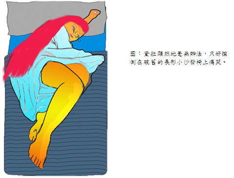
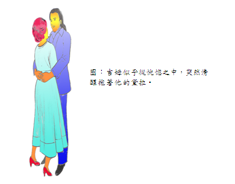

聖誕禮物 江銘輝 五夢網
一元八角七分，總共就是這麼多，並且有60分錢還是一分錢、一分錢的硬幣。一分錢的儲存是一次一分錢，二分錢與雜貨商、菜販、肉販討價還價直到面紅耳赤，默默被罵自己是吝嗇的狀況下，完成交易得來。黛拉將它算了三次，但還是只有一元八角七分，眼看明天就是聖誕節了。 黛拉顯然地毫無辦法，只好撲倒在破舊的長形小沙發椅上痛哭，這也是黛拉所能作的了。她憑良心的回想，覺得人生是充滿哭泣、嘆息和微笑組成的。其中尤以嘆息居多。

當這家的女主人逐漸從第一幕回憶到第二幕的時候，我們來看看這個家，它的裝飾再簡單不過了，每週租金八元。雖然不敢以窮人來形容，但看到那裡住的人，生活像乞丐的樣子，簡直可說是窮光蛋。
樓下的走道掛著一個不會有人把信投進去的信箱，和一個從來也沒有人去按的電鈴。那兒有一個牌子，寫著：「詹姆士．迪林翰．楊先生」。
「迪林翰」是從前這家主人週薪三十元發達的時後加上去的，但已經不再管它任其風吹雨淋。現在，收人減為二十元，儘管，他們認真的考慮要縮減成謙遜，不再採用「迪林翰」的字眼，可是每當詹姆士．迪林翰．楊先生回到家裡走到樓上時。詹姆士太太（這位我們前面已經介紹您的黛拉）都會叫他吉姆並熱切地擁抱他。生活好像過得還不錯。
黛拉哭完後，在臉頰上撲了些微的粉，她站到窗前無精打采地看著一隻灰色的貓兒在灰色庭院的灰的牆上走著。明天就是聖誕節了，她手頭上只有一元八角七分可以替吉姆買聖誕禮物。好幾個月以來，她能想辦法存下每一個辨士，才得這樣結果。一個星期花二十元不算離譜，開支一直都超過她的預算，情況總是如此。她只有一元八角七分可以為吉姆，她的吉姆，買禮物。在這些快樂時光裡，她一直盤算著要為他買一件漂亮的禮物。某些精緻、稀有和高級物品，剛好有些配得上吉姆擁有值得的紀念品。
屋裡二扇窗戶中閒有塊穿衣鏡，也許你在租金八元的樸素公寓裡看過這種窗間鏡。或許只有細小、機敏的人，才能從觀看自己一連串長形的影像中，迅速補獲大致正確相貌的概念。黛拉因為身材較苗條．也精通這種本事。
她迅速從窗戶轉身過來，站在穿衣鏡的前面，剛開始，她的眼睛閃閃發光，但是她的臉色二十秒鐘之內就失去光彩。她很快把頭髮放下，讓秀髮完全下垂。
今天，詹姆士．迪林翰．楊家擁有兩件引以為傲的財富。一件是吉姆的租父、父親傳下來的金錶，另外一件就是黛拉的頭髮。如果西巴皇后住在天井對面的公寓，黛拉有一天會把她的頭髮垂在窗口曬乾，好讓皇后的珠寶和禮物為之黯然失色。如果所羅門王是個守門人．他的寶物都堆在地窖裡，吉姆每次打從他那兒走過．他一定會把金錶拿出來亮一亮，讓所羅門王嫉妒得吹鬍子瞪眼睛。
因此此刻黛拉的美髮垂在頸部四周，波浪盪漾、光亮華麗好像棕色的小瀑布。她的頭髮垂到膝蓋，幾乎成了她的外衣，然後她又神經質地迅速再把頭髮盤梳上來。再次，她遲疑一下．靜靜地站著，一、二滴眼淚掉在破舊的紅地毯上。
她穿上棕色的舊外衣，戴上棕色的舊帽子，兩眼含著晶亮的淚光，擺動裙子，急忙地走出門外，下了階梯走到街上去。
她停在一個招牌前面，牌上寫著:「索芬蘿妮夫人，經營各式美髮物品」。黛拉一口氣衝到樓上，定下神來，喘口氣。夫人身材高大，皮膚蒼白、冷冰冰的，很難看出她就是這間「索芬蘿妮」的老闆。
「您要買我的頭髮嗎?」黛拉問道。
「買呀，」夫人說，「把您的帽子摘下，讓我看看它。」
棕色的頭髮呈波浪狀，像瀑布般傾瀉而下。
「二十塊錢，」一邊夫人說著．一面用她經驗老到的手把那一大把頭髮掀起來。
「趕快把餞給我吧。」黛拉說。
啊!接下來的兩個鐘點像長了愉快的翅膀，很快就溜走了。忘記這隨便說說的話吧。為了買吉姆的禮物，她找遍所有的商店。
最後她找到了，確信是為了吉姆而不是為別人做的。像這樣的東西，別家商店是找不到，她把它們的全部全部翻過。那是樸素的白金懷錶鍊，設計簡單，顯然告知它的價值單純來至東西的本質而不是外表美麗的裝飾。所有好的貨色都應該如此。這條錶鏈與吉姆這隻懷表示非常相配。當她看見就認定它是屬於吉姆的，它與他也很相稱。文靜而有價值，這種描述對他們倆都很恰當。他們收她二十一元，匆匆忙忙帶著八角七分趕回家。有了錶鏈，吉姆就可以在同袍面前堂皇的關心時間。雖然這個錶很豪華氣派，但之前因為沒有錶鍊．只用一條舊皮帶繫著，他只是有時候偷偷看它一眼。
當黛拉回到了家，她的狂喜變得有些謹慎和理智。她找出鐵製的捲髮用具，點燃瓦斯。開始修補由於慷慨和加愛情所造成的損壞。這向來都是一件艱巨的任務，親愛的朋友們，一件大工程啊!
四十分鐘之內，她的頭上罩滿了小小、緊貼頭皮的捲髮，這樣地使她看起來十分像一個逃學的小孩。她久久地、仔細地、挑剔地望著鏡中的自己。自言自語說：「如果吉姆看我第二眼之前沒有殺掉我，他一定會說我活像科尼島合唱團的女團員。可是我又能怎麼辦？唉！只有一元八角七分，我能拿它做什麼呢？」
七點鐘，咖啡煮好了，煎鍋在爐上熱熱的準備煎肉排。吉姆從不晚歸。黛拉把懷錶鏈對疊握在手裡。她坐在靠近吉姆經常進門桌子的角上。接著，她聽到一樓階梯他的腳步聲。她的臉色有一陣子變白。她平常有個習慣，日常生活的小事兒地都默禱一番。現在她低聲禱告：「上帝啊！求求您，讓他覺得我仍然很漂亮。」
門開了，吉姆進來，把門關上。他看起來消瘦，又很嚴肅。可憐的傢伙，他才二十二歲 就扛上一個家的重擔，他需要一件新大衣，連手套也沒有。
吉姆站在屋內的門口，靜靜的不動，一副臘腸狗在嗅鵪鶉似的。他雙眼釘著黛拉，眼神露出黛拉無法解讀的表情，另她很害怕。那不是生氣、驚訝．也不是不悅或恐怖，根本不是她預想的任何一種表情。他只是臉上帶著奇妙的表情目不轉睛地看著她。
黛拉不安地離開桌子向他走過去。「吉姆，親愛的，」她喊道，「不要那樣看我，我把頭髮剪了，賣了。因為我總不能過聖誕節而沒有替你買禮物。我的頭髮會再長出來，你不會介意吧，不是嗎？我所以要這麼做，是因為我的頭髮長得出奇地快!吉姆，跟我說聖誕快樂!我們快快樂樂吧!你不知道我給你買了多優美．漂亮的禮物啦!」
「你已經把頭髮剪了?」吉姆吃力地問，好像他絞盡腦汁，也想不到這顯明的事實。
「剪了，也賣了。」黛拉說，「不管怎樣，你不是同樣愛我嗎?我頭髮剪了，我還是我啊，對不對?」
吉姆奇怪地向房子四周查看。
「你說你的頭髮沒了?」他簡直是白癡，明知故問。
「你不用找啦，」黛拉說，「它已經賣了，我告訴你，我把它賣了，也不見了。來，今晚是聖誕前夕。好人兒，善待我罷！這一切都是為你。也許我頭上的頭髮是可以數出來的，」突然她用一種特別甜蜜的口吻繼續說：「但我對你的愛是沒有人能衡量的。吉姆，我去煎肉排好嗎?」
吉姆似乎從恍惚之中，突然清醒抱著他的黛拉。讓我們用10秒鐘從另一種方向審慎仔細的觀察周遭細微的事情。週薪八元或年薪一百萬，又有什麼差別呢？數學家或智者都可能給你錯誤的答案。聖嬰誕生時，東方三博士帶來的有價值物品，當中也沒有包含這個答案。這個無法知道的謎底，後面將會揭曉。

吉姆從大衣口袋裡拿出一包東西，將它扔到桌上。「黛拉，不要錯怪我。」他說。「我想你頭髮儘管怎麼剪、修、洗，都無法減低我對你的愛。可是如果你打開這個包包，你就會明白為何你先前會使我給愣住一會兒。」白皙的手指靈巧地把繩子和包裝紙打開，接著是高興的狂叫聲，然後．啊呀!很快變成女性歇斯底里的淚水和哭泣。立刻需要房間的主人盡一切力量來安慰。
裡面擺著是梳子--一整套的梳子。它擺在百老匯櫥窗裡面，其側面和背面的款式，長久以來一直被黛拉所羨慕。這是十分漂亮的梳子，純粹用玳瑁做成的，而且邊上鑲著珠寶—其顏色正好同她美麗光亮的頭髮相匹配。她知道這梳子相當昂貴，她心裡只是一直渴望、思慕著，一點也不敢期望望擁有它。現在它已經是她的啦。可是應該用以匹配這妄想的飾物的頭髮己經不見了。
但是她依然將它們把抱在胸前，最後檯起頭用淚汪汪的眼睛微笑著說：「吉姆，我的頭髮會長得很快呀!」，然後，黛拉像一隻燙傷的小貓兒跳起來，叫道：「哦!哦!」
吉姆尚未看見他漂亮的禮物，她熱切的打開手掌伸到給他的前面。這個默默無語的貴重金屬，開始一閃一閃，彷彿就是黛拉愉快而熱情的精神。
「它很漂亮吧，吉姆?我找遍了整個市區才找到的。現在，你一天可以看一百次啦。把你的錶給我，我看看它們搭配起來好看不好看。」
吉姆不但沒有有聽她的話，反而倒在睡倚上。他把雙手擱在腦後笑著。
「黛拉，」他說，「我們把聖誕禮物擱在一旁，暫時收起來。它們太好了，目前派不上用場。我把錶賣了，得了錢買了梳子給你。你現在去煎肉排吧。」
聖經記載的東方三博士，你們都知道。他們是聰明的人--絕頂聰明的人，他們給誕生在馬槽的聖嬰帶來禮物。他們創立了饋贈聖誕禮物的藝術。由於非常聰明，他們的禮物毫無疑問是有智慧的。如果有二樣是同樣的話，可能還永允許交換的特權。在這裡，我已經跌跌撞撞的告訴你們住在公寓平凡過日子的兩個愚蠢的小孩，用最不聰明的方法彼此他們把家裡最寶貴的東西犧牲了。可是我要對今日自認聰明的人，奉上最後一句話，所有饋贈禮品的人，這雨位是最聰明的。所有如此饋贈禮品和接受禮品的人，他們也是最聰明的。無論何時何地，他們都是最聰明的。他們簡直就是聖經所記載的博士。
The Gift Of The Magi（英文原版）
by O Henry
One dollar and eighty-seven cents. That was all. And sixty cents of it was in pennies. Pennies saved one and two at a time by bulldozing the grocer and the vegetable man and the butcher until one's cheeks burned with the silent imputation of parsimony that such close dealing implied. Three times Della counted it. One dollar and eighty- seven cents. And the next day would be Christmas.
There was clearly nothing to do but flop down on the shabby little couch and howl. So Della did it. Which instigates the moral reflection that life is made up of sobs, sniffles, and smiles, with sniffles predominating.
While the mistress of the home is gradually subsiding from the first stage to the second, take a look at the home. A furnished flat at $8 per week. It did not exactly beggar description, but it certainly had that word on the lookout for the mendicancy squad.
In the vestibule below was a letter-box into which no letter would go, and an electric button from which no mortal finger could coax a ring. Also appertaining thereunto was a card bearing the name "Mr. James Dillingham Young."
The "Dillingham" had been flung to the breeze during a former period of prosperity when its possessor was being paid $30 per week. Now, when the income was shrunk to $20, though, they were thinking seriously of contracting to a modest and unassuming D. But whenever Mr. James Dillingham Young came home and reached his flat above he was called "Jim" and greatly hugged by Mrs. James Dillingham Young, already introduced to you as Della. Which is all very good.
Della finished her cry and attended to her cheeks with the powder rag. She stood by the window and looked out dully at a gray cat walking a gray fence in a gray backyard. Tomorrow would be Christmas Day, and she had only $1.87 with which to buy Jim a present. She had been saving every penny she could for months, with this result. Twenty dollars a week doesn't go far. Expenses had been greater than she had calculated. They always are. Only $1.87 to buy a present for Jim. Her Jim. Many a happy hour she had spent planning for something nice for him. Something fine and rare and sterling--something just a little bit near to being worthy of the honor of being owned by Jim.
There was a pier-glass between the windows of the room. Perhaps you have seen a pierglass in an $8 flat. A very thin and very agile person may, by observing his reflection in a rapid sequence of longitudinal strips, obtain a fairly accurate conception of his looks. Della, being slender, had mastered the art.
Suddenly she whirled from the window and stood before the glass. her eyes were shining brilliantly, but her face had lost its color within twenty seconds. Rapidly she pulled down her hair and let it fall to its full length.
Now, there were two possessions of the James Dillingham Youngs in which they both took a mighty pride. One was Jim's gold watch that had been his father's and his grandfather's. The other was Della's hair. Had the queen of Sheba lived in the flat across the airshaft, Della would have let her hair hang out the window some day to dry just to depreciate Her Majesty's jewels and gifts. Had King Solomon been the janitor, with all his treasures piled up in the basement, Jim would have pulled out his watch every time he passed, just to see him pluck at his beard from envy.
So now Della's beautiful hair fell about her rippling and shining like a cascade of brown waters. It reached below her knee and made itself almost a garment for her. And then she did it up again nervously and quickly. Once she faltered for a minute and stood still while a tear or two splashed on the worn red carpet.
On went her old brown jacket; on went her old brown hat. With a whirl of skirts and with the brilliant sparkle still in her eyes, she fluttered out the door and down the stairs to the street.
Where she stopped the sign read: "Mne. Sofronie. Hair Goods of All Kinds." One flight up Della ran, and collected herself, panting. Madame, large, too white, chilly, hardly looked the "Sofronie."
"Will you buy my hair?" asked Della.
"I buy hair," said Madame. "Take yer hat off and let's have a sight at the looks of it."
Down rippled the brown cascade.
"Twenty dollars," said Madame, lifting the mass with a practised hand.
"Give it to me quick," said Della.
Oh, and the next two hours tripped by on rosy wings. Forget the hashed metaphor. She was ransacking the stores for Jim's present.
She found it at last. It surely had been made for Jim and no one else. There was no other like it in any of the stores, and she had turned all of them inside out. It was a platinum fob chain simple and chaste in design, properly proclaiming its value by substance alone and not by meretricious ornamentation--as all good things should do. It was even worthy of The Watch. As soon as she saw it she knew that it must be Jim's. It was like him. Quietness and value--the description applied to both. Twenty-one dollars they took from her for it, and she hurried home with the 87 cents. With that chain on his watch Jim might be properly anxious about the time in any company. Grand as the watch was, he sometimes looked at it on the sly on account of the old leather strap that he used in place of a chain.
When Della reached home her intoxication gave way a little to prudence and reason. She got out her curling irons and lighted the gas and went to work repairing the ravages made by generosity added to love. Which is always a tremendous task, dear friends--a mammoth task.
Within forty minutes her head was covered with tiny, close-lying curls that made her look wonderfully like a truant schoolboy. She looked at her reflection in the mirror long, carefully, and critically.
"If Jim doesn't kill me," she said to herself, "before he takes a second look at me, he'll say I look like a Coney Island chorus girl. But what could I do--oh! what could I do with a dollar and eighty- seven cents?"
At 7 o'clock the coffee was made and the frying-pan was on the back of the stove hot and ready to cook the chops.
Jim was never late. Della doubled the fob chain in her hand and sat on the corner of the table near the door that he always entered. Then she heard his step on the stair away down on the first flight, and she turned white for just a moment. She had a habit for saying little silent prayer about the simplest everyday things, and now she whispered: "Please God, make him think I am still pretty."
The door opened and Jim stepped in and closed it. He looked thin and very serious. Poor fellow, he was only twenty-two--and to be burdened with a family! He needed a new overcoat and he was without gloves.
Jim stopped inside the door, as immovable as a setter at the scent of quail. His eyes were fixed upon Della, and there was an expression in them that she could not read, and it terrified her. It was not anger, nor surprise, nor disapproval, nor horror, nor any of the sentiments that she had been prepared for. He simply stared at her fixedly with that peculiar expression on his face.
Della wriggled off the table and went for him.
"Jim, darling," she cried, "don't look at me that way. I had my hair cut off and sold because I couldn't have lived through Christmas without giving you a present. It'll grow out again--you won't mind, will you? I just had to do it. My hair grows awfully fast. Say `Merry Christmas!' Jim, and let's be happy. You don't know what a nice-- what a beautiful, nice gift I've got for you."
"You've cut off your hair?" asked Jim, laboriously, as if he had not arrived at that patent fact yet even after the hardest mental labor.
"Cut it off and sold it," said Della. "Don't you like me just as well, anyhow? I'm me without my hair, ain't I?"
Jim looked about the room curiously.
"You say your hair is gone?" he said, with an air almost of idiocy.
"You needn't look for it," said Della. "It's sold, I tell you--sold and gone, too. It's Christmas Eve, boy. Be good to me, for it went for you. Maybe the hairs of my head were numbered," she went on with sudden serious sweetness, "but nobody could ever count my love for you. Shall I put the chops on, Jim?"
Out of his trance Jim seemed quickly to wake. He enfolded his Della. For ten seconds let us regard with discreet scrutiny some inconsequential object in the other direction. Eight dollars a week or a million a year--what is the difference? A mathematician or a wit would give you the wrong answer. The magi brought valuable gifts, but that was not among them. This dark assertion will be illuminated later on.
Jim drew a package from his overcoat pocket and threw it upon the table.
"Don't make any mistake, Dell," he said, "about me. I don't think there's anything in the way of a haircut or a shave or a shampoo that could make me like my girl any less. But if you'll unwrap that package you may see why you had me going a while at first."
White fingers and nimble tore at the string and paper. And then an ecstatic scream of joy; and then, alas! a quick feminine change to hysterical tears and wails, necessitating the immediate employment of all the comforting powers of the lord of the flat.
For there lay The Combs--the set of combs, side and back, that Della had worshipped long in a Broadway window. Beautiful combs, pure tortoise shell, with jewelled rims--just the shade to wear in the beautiful vanished hair. They were expensive combs, she knew, and her heart had simply craved and yearned over them without the least hope of possession. And now, they were hers, but the tresses that should have adorned the coveted adornments were gone.
But she hugged them to her bosom, and at length she was able to look up with dim eyes and a smile and say: "My hair grows so fast, Jim!"
And them Della leaped up like a little singed cat and cried, "Oh, oh!"
Jim had not yet seen his beautiful present. She held it out to him eagerly upon her open palm. The dull precious metal seemed to flash with a reflection of her bright and ardent spirit.
"Isn't it a dandy, Jim? I hunted all over town to find it. You'll have to look at the time a hundred times a day now. Give me your watch. I want to see how it looks on it."
Instead of obeying, Jim tumbled down on the couch and put his hands under the back of his head and smiled.
"Dell," said he, "let's put our Christmas presents away and keep 'em a while. They're too nice to use just at present. I sold the watch to get the money to buy your combs. And now suppose you put the chops on."
The magi, as you know, were wise men--wonderfully wise men--who brought gifts to the Babe in the manger. They invented the art of giving Christmas presents. Being wise, their gifts were no doubt wise ones, possibly bearing the privilege of exchange in case of duplication. And here I have lamely related to you the uneventful chronicle of two foolish children in a flat who most unwisely sacrificed for each other the greatest treasures of their house. But in a last word to the wise of these days let it be said that of all who give gifts these two were the wisest. O all who give and receive gifts, such as they are wisest. Everywhere they are wisest. They are the magi.